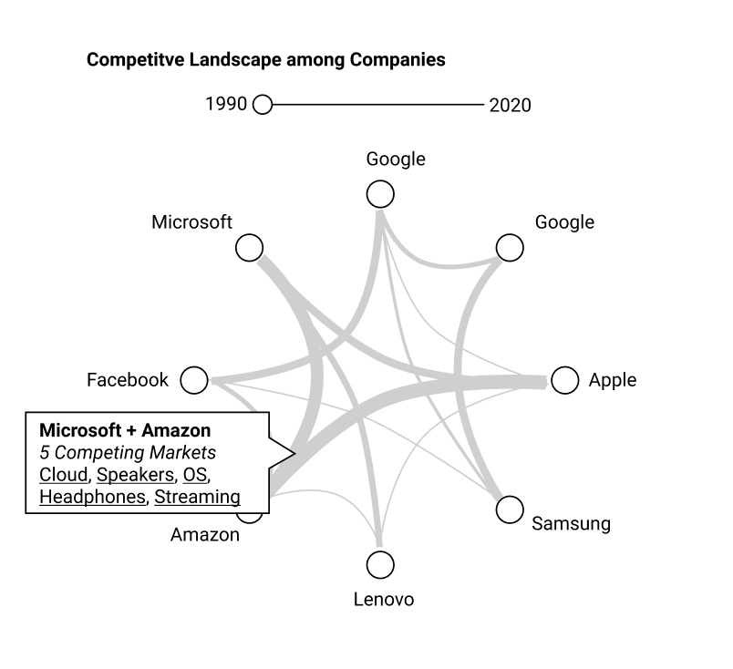

Jakob Braunschweiger: jbraunschweiger@wustl.edu 466081
Nathan Ostdiek: nathanostdiek@wustl.edu 455650
Zachary Young: Zachary.young@wustl.edu 466721
We have chosen to visualize the competition amongst tech companies in various market sectors in the tech industry. The tech industry has dominant companies that compete in multiple industries, from smartphones to cloud services to streaming platforms. Our background as Computer Science college students and usage of relevant companies’ products almost daily, inspired us to carry out this project. Technology affects everyone in the world and that control will continue to grow in the future. We are motivated to better understand the competitive relationships between companies as their decisions and products will influence how we live our lives.
The primary objective of our visualization is to show competition amongst companies in the tech industry in different market segments. We want to show the competitive relationships between companies, and for each market sector, we plan to show the percentage that each competing company has captured. This will help the user understand who is winning and losing in each market. Visualizing this data can help provide insight into the following questions: Are there too many or too few companies in an industry that causes different types of behavior? Is the varying levels of competition good for companies? Do companies compete against each other in every industry or focus on one specific product? Does a company capture smaller market segments in a variety of industries or a bigger portion of one industry?
Answering these questions will help the user better understand the business side of the ever growing technology industry as a whole. It is important to know these relationships, as they will shape the next generation of products and platforms in our country. Nearly everybody owns and uses a product from multiple of the companies displayed in our visualization, so it is beneficial to know the competition in the market. This knowledge can lead to purchasing better products for the user or what to expect for a company in the future.
We set out to find answers to these questions. As a team working together, we will learn and get better at wrangling data from scratch, creating effective visualizations from this data, and providing an intuitive, easy to use format.
Since we need data for many subsets of the tech industry, we are going to need to use various different sources. While they are not yet totally comprehensive, here are the datasets we have found so far, organized by the subset of the general technology market they pertain to:
Since we have so many different sources of data, we are going to need to do some heavy manual cleanup. Currently, the plan is to decide on a structure for the data and then begin moving data from our separate sources into a central CSV or JSON document.
Likely we will have two central documents one with each row representing a market segment (e.g. smartphones, computers, cloud computing) and the other representing companies. For the segments, we would want to have data such as which companies hold market share and what percent. For companies, we probably want to store basic data like name, symbol, revenue, ect and some more advanced information such as how their revenue breaks down into market segments.
After we have these 2 central sources of information, we can automate joining them with a python script before runtime or at runtime with D3, depending on how we decide to architect our visualization.
The following four images show some initial ideas we came up regarding the competitive landscape of big tech companies. Each image depicts a different way to summarize the data. For example, the first image shows market share within one particular segment. The second image shows revenue breakdown of a particular company. The third image shows market share across multiple segments. Finally, the fourth visual shows how many segments companies compete with each other across.
In the end, we chose to combine some of the features in each of the images to produce a comprehensive summary of the data. The primary focus of our visualization will be the relations between each of the companies. A thicker line indicates that the company competes with the other company across many different industries. Moreover, we hope to add drill-down capabilities to summarize more specific data, such as data within a certain market segment or a certain company. Also, we chose to add a comparison function to our bubble graphs as a way to compare different companies and sectors without using a stacked bar chart. We found that a stacked bar chart would not scale well with a lot of data, since the number of companies and market segments could be quite large.
In terms of visual encoding, we chose a circular network-like graph for our primary visualization because it was the best way to represent connections between different nodes. This highly interconnected data could not be represented by other visualizations such as a bar chart or line chart. We also chose to concentrate the nodes within a circle for the sake of readability.
For the bubble charts, we chose area and separate bubbles also for the sake of readability. While area is often not the best form of visual encoding, we found that a pie chart and a treemap chart would not scale well with large quantities of companies and market segments. Additionally, bubble charts are fun to interact with, and we could allow the user to drag and drop bubbles for a more immersive experience.
By 11/23 - One of us will develop data structures, another will source our initial data and conform it to fit our data structures, and the last team member will build the first prototype of our main visualization. This prototype will display connections between companies on a prototype of the main visualization using initial data.
By 11/30 - One of us will finish sourcing and cleaning the data, another will add logos for the companies and position them correctly in the visualization, and the last will work on color coding and adding legend.
By 12/7 - One of us will focus on making the elements of the legend selectable, update the visualization when that happens. Another will focus on making the company logos selectable, update the visualization when that happens. The last one will work on the secondary visualization (the bar graph that shows more information about what is selected.
By 12/14 - This week we will all work on prepping for the final presentation. Generating slides, polishing the visualization, and practicing our presentation.
By 12/21 - One of us will take this week to do user testing and figure out what needs to change in the final visualization. Another will work on finishing up whatever work is left on the secondary visualization. The last team member will start adding optional features wherever possible.
By 12/28 - This week we will all be working on iterating based on the user testing notes from the previous week. We will assign specific tasks week-of as we do not yet know what the notes will deem as necessary.
By 1/4 - We are leaving this week open in the schedule in case we fall behind. If not, we will spend it making final tweaks. At the end of this week the project should be completely done.